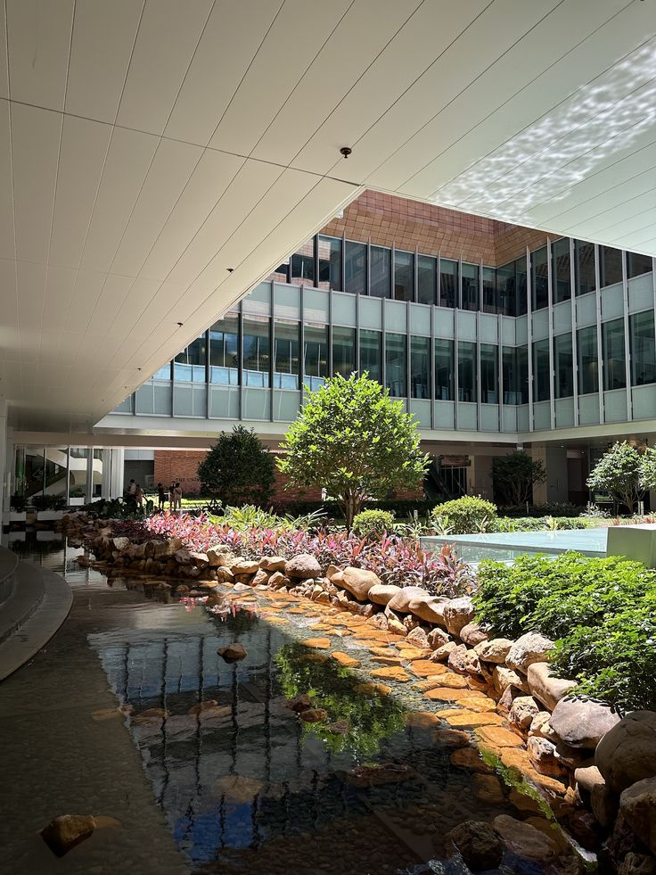

HKU's Spectral Circuit: Where Campus Legends Walk
Tour Overview
Welcome to "HKU's Spectral Circuit," a 1.5-hour walking tour that explores the thin line between fact and fiction at the University of Hong Kong. This journey through HKU's main campus reveals how urban legends emerge from specific historical contexts, reflect student anxieties, and become part of the university's living folklore. Designed specifically for freshmen, this tour helps you navigate both the physical landscape and the hidden stories of your new academic home.


Scroll to begin your journey
↓